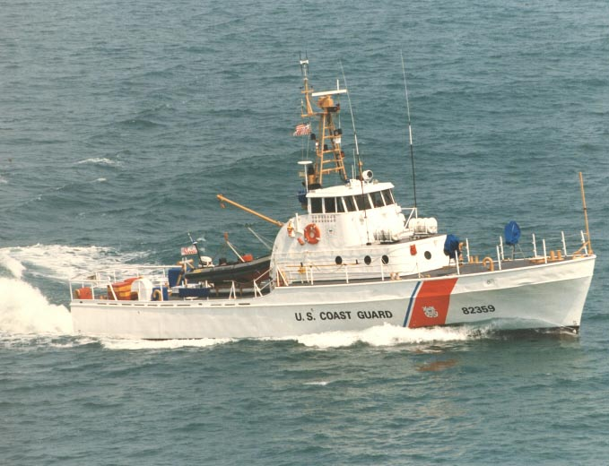

Azerbaijan Outreach
March 28, 2003
RV Transquest, Sausalito,
CA
Back
to the Transquest Home Page

Press Release by the Coast Guard after
the graduation ceremony on March 28, 2003, for the Azeri crew:
"Last of the Class"
USCGC PT BROWER (WPB 82372)

On March 28th, 2003, the United States Coast Guard will transfer
Coast Guard Cutter Point Brower (WPB 82372) to the country of Azerbaijan
thus bringing an incredible era of "Point Class" vessels to an end.
The transfer ceremony will take place at 10a.m. at Coast Guard Group San
Francisco on Yerba Buena Island.
CGC Point Brower was commissioned in 1970 and stationed in San
Diego, CA with primary missions in Law Enforcement (LE) and Search and
Rescue (SAR). While in San Diego she was credited for the seizure
of 17,646 lbs. of marijuana aboard the tug FLEETS POINT. Her vigilance
continued in San Diego until 1989 when she relocated to the San Francisco's
Yerba Buena Island continuing her missions in LE and SAR. Upon arriving
she found her enduring talents put to the test performing multiple operations
in the aftermath of the Loma Prieta Earthquake of 1989. Her other
accomplishments include several hundred law enforcement boardings, response
to thousands of SAR cases throughout the waters of Coast Guard Group San
Francisco, Onscene Commander for the rescue of Humphrey the Humpback Whale
in 1990, and patrolling the 1992 America's Cup races off San Diego.
Never irresolute from her motto of Semper Paratus, which means
Always Ready, it's easy to say that the many crews who have served aboard
Point Brower's decks have embodied the core competencies of the US Coast
Guard, Honor - Respect - Devotion to Duty. These core competencies
are now being transferred to the country of Azerbaijan via classroom and
practical hands-on training, instructional training on all equipment (old
and new) and many hours of underway training throughout the San Francisco
Bay.
Senior Chief Boatswain Mate Paul Andrieu, Chief Machinist Technician
Greg Ressio, Chief Quartermaster Steven Tierney and LT Paul Garcia possessing
over 90 years of experience, took the twelve-man crew through all Engineering,
Navigational, Operational and Damage control training associated with an
82 foot multi-use patrol vessel. Adapting to the Russian language
barrier by using translators, these men performed repeated instruction
in all areas until the Azeri crew smiled that smile of confidence.
Point Brower's prospective new skipper, Captain 2nd Rank Rufat
Feyzulov, and his second in command, Auxiliary Ziyad Aghayev, now pilot
the vessel demonstrating their new skills conducting operational, damage
control and maneuvering drills independently. They eagerly wait the
day they'll be patrolling their territorial waters in the Caspian Sea.
A place where Captain Feyzulov says their training will be put to the test
as she continues Point Brower's missions of LE and SAR as the "Azerbaijan
Marine Brigade Ship S-201".
The Point Brower is the 34th "Point Class" to be transferred
by Coast Guard International Affairs' Foreign Military Sales (FMS) Department
at Coast Guard Headquarters. The 12 Azeri sailors are now to be counted
among the hundreds of Foreign Maritime Students trained as Coast Guard
vessels are transferred to other countries. From Antigua to Azerbaijan,
Ecuador to Estonia and from Trinidad & Tobago to Tunisia, ex-Coast
Guard Cutters are patrolling in waters around the globe. Over 27 countries
have received one or more of the 8-WLB's, 7-WLM's, 41-44'MLBs' and the
already mentioned 34-WPB's from the fleet. This incredible program,
operating almost entirely on reimbursable funding from the foreign clients,
has saved in excess of 28 million dollars in disposals costs while receiving
over 18 million dollars in reimbursements.
Many nations have a maritime service, but many of the service
core missions are essentially those of a Coast Guard - SAR, counter-narcotics,
resource protection, aids to navigation, etc. The Coast Guard, as
the world's premier multi-mission maritime force, provides an excellent
model for most foreign maritime services. Ship transfers provide
capable platforms, technical training and enhanced opportunities for engagement
with foreign maritime services.
Enabling legislation for Foreign Military Sales is the Arms Export
Control Act (Public Law 90-269) that authorizes government-to-government
purchases of weapons, equipment, training, and services such as technical
assistance and construction. Congress sets eligibility requirements
and dollar limits for each program. This statute gives ownership
of the security assistance program to the Department of State and execution
and oversight to the Department of Defense. The Foreign Assistance
Act (Public Law 87-195) which authorizes transfer of training and equipment
by presidential direction, (22 USC 2318), transfer of Excess Defense Articles
as grant items at no cost (22 USC 2321), Bureau of International Narcotics
and Law Enforcement Affairs to fund training and the transfer of equipment
for counter-narcotics (22 USC 2291), as well as financing the training
of foreign military students known IMET (22 USC 2347). Regardless
of the specific authority, all foreign military sales must be executed
at no cost to the US taxpayer.
Web pages & photos provided
by the Transquest Web master: Sarah Rodger

Back
to the Azerbaijan Outreach page
Back
to the Transquest Home Page